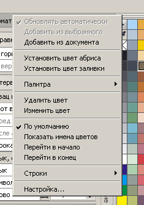
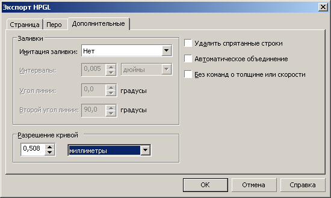

ВОПРОС / ОТВЕТ ДЛЯ НАЧИНАЮЩИХ
polzovatel-902 / 13.07.2010, 09:21/00:41
Форум:
Объясню на примере, чтоб было понятней... Открываю в кореле картинку (футболку с надписью) в формате JPG, мне нужно вытянуть из футболки надпись, т.е разъеденить файл... Говорят нужно формат изменить, еще что-то... Объясните, пожалуйста, что нужно сделать для этого...? Заранее спасибо.
Zigzain, судя по всему, можно только базовые трансформации — изм. размера например. А всё остальное нужно делать внитри символа непосредственно с объектами.
символ нужен чтобы его размножать и при изменении в одном он автоматом изменяется и в других местах. это типа клона :)
если тебе надо поменять его чтоб он и в других местах изменился, то щелкни правым мышом и в меню выбери "изменить символ" и ты типа войдешь в него как будто в паверклип, чо-то там изменишь и он изменится во всех копиях.
а если тебе так не надо, и вобще этот символ приехал откуда-то свыше, то также щелкни правым мышом и выбери "вернуть в объекты" и делай с ним теперь что хош.
Обращаюсь к гуру КорелДро и джедаям вектора!
Создал для определённой работы свою палитру (№1). Всё бы хорошо, но когда нужна градиентая заливка (F11) то в выборе второго цвета заливки стоит родная Кореловская палитра(№2) и даже если пройти внутрь "Селект колор"(№3)там стоит та же палитра...
Вопрос>>> Как сделать чтоб в этих местах стояла своя(самодельная)палитра??? Про пипетку не пишите)))...
на заголовке палитры правой кнопкой и поставь галочку "по умолчанию"

MMGS спасибо, это решает проблему для картинки 2, а вот для картинки 3 никак не решает, а так надо иногда поправить немного цвет>>> приходится лезть в Селект колор и там подгружать свою палитру....((( хотелось в два клика...но видно не судьба :))))
chally, и в чем проблема?
у меня из них вылазит палитра которую я задал по умолчанию.
и еще хинт - в инструменте "интерактивная заливка" (последний самый) показываются начальный и конечный квадратики цвета, на которые можно драг-н-дропать цвета из любой открытой палитры.
да собсно просто красить объекты можно драг-н-дропом тоже :) и абрисы у них тоже также дропаются.
Мерси!)
Добрый день. Подскажите пожалуйста как сохранять размеры векторного изображения не изменными. Допустим я рисую круг дияметром 200мм и сохраняю изображение в формате .plt . После повторного открытия изображения диаметр круга становится 200мм +/_ 0,54мм.
я нарезкой не занимаюсь, поэтому могу ошибаться.
я сделал круг 200 мм, сохранил в plt и открыл - он стал не кругом а многоугольником в виде круга, но с габаритными размерами 200*200 мм.
возможно это зависит настроек от сглаживания кривой.
также смотри скриншот - цифра очень похожая на твою :)

В 12м есть возможность чтоб внизу в навигаторе документов вместо вкладок страниц одного документа отображались вкладки отдедьных документов открытых в даныый момент ? ( многостраничные доки я вообще не использую ).
Страницы